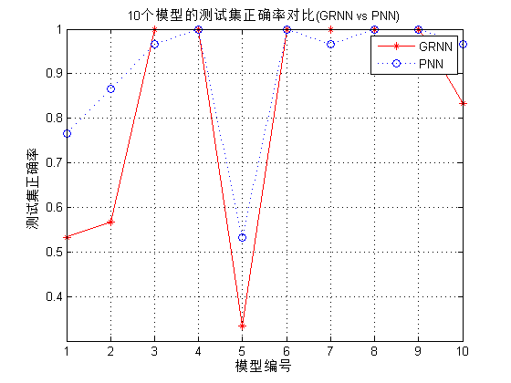
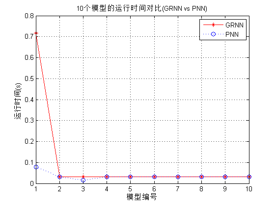
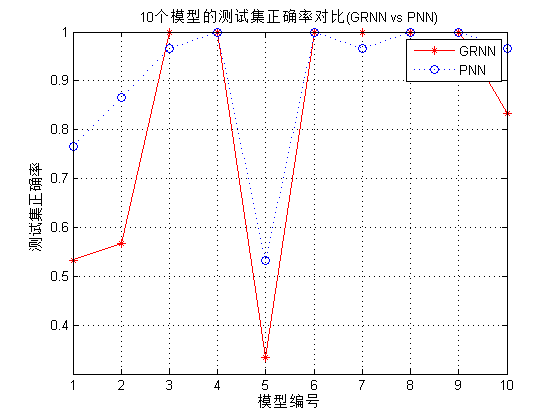
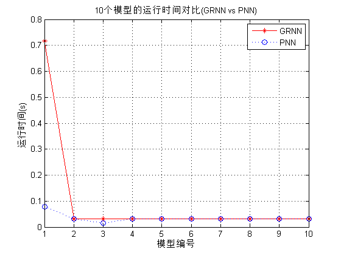

Contents
I. 清空环境变量
clear all
clc
II. 训练集/测试集产生
1. 导入数据
load iris_data.mat
2 随机产生训练集和测试集
P_train = []; T_train = []; P_test = []; T_test = []; for i = 1:3 temp_input = features((i-1)*50+1:i*50,:); temp_output = classes((i-1)*50+1:i*50,:); n = randperm(50); % 训练集——120个样本 P_train = [P_train temp_input(n(1:40),:)']; T_train = [T_train temp_output(n(1:40),:)']; % 测试集——30个样本 P_test = [P_test temp_input(n(41:50),:)']; T_test = [T_test temp_output(n(41:50),:)']; end
III. 模型建立
result_grnn = []; result_pnn = []; time_grnn = []; time_pnn = []; for i = 1:4 for j = i:4
p_train = P_train(i:j,:);
p_test = P_test(i:j,:);
1. GRNN创建及仿真测试
t = cputime;
% 创建网络
net_grnn = newgrnn(p_train,T_train);
% 仿真测试
t_sim_grnn = sim(net_grnn,p_test);
T_sim_grnn = round(t_sim_grnn);
t = cputime - t;
time_grnn = [time_grnn t];
result_grnn = [result_grnn T_sim_grnn'];
2. PNN创建及仿真测试
t = cputime;
Tc_train = ind2vec(T_train);
% 创建网络
net_pnn = newpnn(p_train,Tc_train);
% 仿真测试
Tc_test = ind2vec(T_test);
t_sim_pnn = sim(net_pnn,p_test);
T_sim_pnn = vec2ind(t_sim_pnn);
t = cputime - t;
time_pnn = [time_pnn t];
result_pnn = [result_pnn T_sim_pnn'];
end end
IV. 性能评价
1. 正确率accuracy
accuracy_grnn = []; accuracy_pnn = []; time = []; for i = 1:10 accuracy_1 = length(find(result_grnn(:,i) == T_test'))/length(T_test); accuracy_2 = length(find(result_pnn(:,i) == T_test'))/length(T_test); accuracy_grnn = [accuracy_grnn accuracy_1]; accuracy_pnn = [accuracy_pnn accuracy_2]; end
2. 结果对比
result = [T_test' result_grnn result_pnn] accuracy = [accuracy_grnn;accuracy_pnn] time = [time_grnn;time_pnn]
result =
Columns 1 through 13
1 2 2 1 1 2 1 1 1 1 1 1 1
1 1 1 1 1 2 1 1 1 1 1 1 1
1 2 1 1 1 2 1 1 1 1 1 1 1
1 2 2 1 1 2 1 1 1 1 1 1 1
1 2 2 1 1 2 1 1 1 1 2 1 1
1 2 2 1 1 2 1 1 1 1 1 1 1
1 2 2 1 1 2 1 1 1 1 1 1 1
1 2 2 1 1 2 1 1 1 1 1 1 1
1 2 2 1 1 2 1 1 1 1 1 1 1
1 2 2 1 1 2 1 1 1 1 2 1 1
2 2 2 2 2 2 2 2 2 2 2 2 2
2 2 2 2 2 2 2 2 2 2 2 1 2
2 2 2 2 2 2 2 2 2 2 2 2 2
2 2 2 2 2 2 2 2 2 2 2 2 2
2 2 2 2 2 2 2 2 2 2 2 2 2
2 2 2 2 2 2 2 2 2 2 2 3 3
2 2 2 2 2 2 2 2 2 2 2 3 3
2 2 2 2 2 2 2 2 2 2 2 3 3
2 2 2 2 2 2 2 2 2 2 2 3 2
2 2 2 2 2 2 2 2 2 2 2 3 2
3 2 2 3 3 2 3 3 3 3 2 3 3
3 3 3 3 3 2 3 3 3 3 3 3 3
3 2 2 3 3 2 3 3 3 3 3 3 3
3 2 2 3 3 2 3 3 3 3 3 3 3
3 3 3 3 3 2 3 3 3 3 3 3 3
3 2 2 3 3 2 3 3 3 3 3 3 3
3 3 3 3 3 2 3 3 3 3 2 3 3
3 3 3 3 3 2 3 3 3 3 3 3 3
3 2 2 3 3 2 3 3 3 3 2 2 2
3 3 3 3 3 2 3 3 3 3 3 3 3
Columns 14 through 21
1 1 1 1 1 1 1 1
1 1 3 1 1 1 1 1
1 1 1 1 1 1 1 1
1 1 1 1 1 1 1 1
1 1 1 1 1 1 1 1
1 1 3 1 1 1 1 1
1 1 1 1 1 1 1 1
1 1 1 1 1 1 1 1
1 1 3 1 1 1 1 1
1 1 1 1 1 1 1 1
2 2 3 2 2 2 2 2
2 2 2 2 2 2 2 2
2 2 3 2 2 2 2 2
2 2 2 2 2 2 2 2
2 2 3 2 2 2 2 2
2 2 1 2 2 2 2 2
2 2 3 2 2 2 2 2
2 2 1 2 2 2 2 2
2 2 2 2 2 2 2 2
2 2 2 2 2 2 2 2
3 3 3 3 3 3 3 3
3 3 1 3 3 3 3 3
3 3 1 3 3 3 3 3
2 3 3 3 3 3 3 3
3 3 2 3 3 3 3 3
3 3 1 3 3 3 3 3
3 3 3 3 3 3 3 2
3 3 3 3 3 3 3 3
3 3 3 3 2 3 3 3
3 3 1 3 3 3 3 3
accuracy =
Columns 1 through 7
0.5333 0.5667 1.0000 1.0000 0.3333 1.0000 1.0000
0.7667 0.8667 0.9667 1.0000 0.5333 1.0000 0.9667
Columns 8 through 10
1.0000 1.0000 0.8333
1.0000 1.0000 0.9667
time =
Columns 1 through 7
0.7176 0.0312 0.0312 0.0312 0.0312 0.0312 0.0312
0.0780 0.0312 0.0156 0.0312 0.0312 0.0312 0.0312
Columns 8 through 10
0.0312 0.0312 0.0312
0.0312 0.0312 0.0312
V. 绘图
figure(1) plot(1:30,T_test,'bo',1:30,result_grnn(:,4),'r-*',1:30,result_pnn(:,4),'k:^') grid on xlabel('测试集样本编号') ylabel('测试集样本类别') string = {'测试集预测结果对比(GRNN vs PNN)';['正确率:' num2str(accuracy_grnn(4)*100) '%(GRNN) vs ' num2str(accuracy_pnn(4)*100) '%(PNN)']}; title(string) legend('真实值','GRNN预测值','PNN预测值') figure(2) plot(1:10,accuracy(1,:),'r-*',1:10,accuracy(2,:),'b:o') grid on xlabel('模型编号') ylabel('测试集正确率') title('10个模型的测试集正确率对比(GRNN vs PNN)') legend('GRNN','PNN') figure(3) plot(1:10,time(1,:),'r-*',1:10,time(2,:),'b:o') grid on xlabel('模型编号') ylabel('运行时间(s)') title('10个模型的运行时间对比(GRNN vs PNN)') legend('GRNN','PNN')
  
 